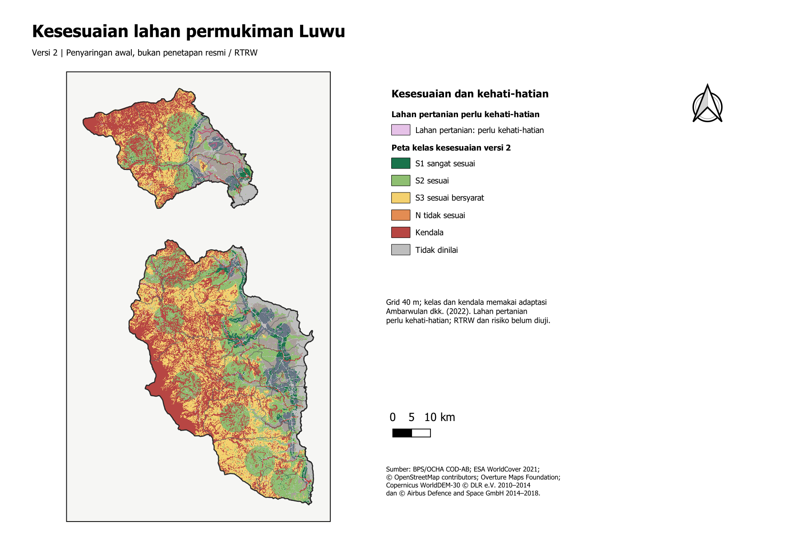

Aplikasi WebGIS interaktif hasil pemodelan kesesuaian fisik lahan permukiman di Kabupaten Luwu menggunakan integrasi GIS-AHP 5 kriteria berbobot (kemiringan lereng, jarak jalan, jarak pusat kecamatan proksi, elevasi, dan jarak alur air). Perhitungan luas menggunakan proyeksi luas-sama (Lambert Azimuthal Equal-Area) untuk menjamin akurasi statistik tanpa distorsi luas UTM.
Eksplorasi spasial multi-layer kesesuaian lahan, kemiringan lereng, tutupan lahan WorldCover, jejak bangunan, dan infrastruktur. Gunakan fitur swipe untuk membandingkan kelas kesesuaian terhadap kemiringan lereng secara langsung.
WebGL tidak aktif atau peta interaktif gagal dimuat. Tampilan fallback:

Distribusi luas dan persentase kelas kesesuaian lahan berdasarkan tabel statistik_kecamatan.csv.
Pilih kecamatan untuk memfilter grafik dan rincian luas wilayah.
| Kelas Kesesuaian | Luas (ha) | % Luas Wilayah* | % dari Dinilai** |
|---|
Berdasarkan tabel/komponen_tidak_dinilai.csv, kategori tidak dinilai bersifat saling eksklusif: tutupan lahan ESA WorldCover 50 (bangunan), 80 (air), 90 (rawa vegetasi), dan 95 (mangrove) diprioritaskan terlebih dahulu, disusul sel yang tersentuh poligon bangunan Overture/OSM, tepi grid raster, dan NoData sumber.
Pengujian respon model terhadap variasi bobot kriteria AHP (±10%) dan pergeseran batas kelas interval sama (±2,5 atau satu interval) berdasarkan tabel/sensitivitas.csv.
Pergeseran batas interval nilai klasifikasi memicu instabilitas luas lahan yang sangat signifikan (88–99%), sementara penyesuaian bobot relatif AHP antar kriteria biofisik tetap menghasilkan konfigurasi spasial yang kokoh (0–4,57%).
Uji stabilitas pembobotan AHP kriteria fisik menunjukkan model sangat mantap terhadap fluktuasi preferensi pakar.
Perubahan interval skor klasifikasi memicu migrasi masif antar kelas S2 dan S3 karena dominasi skor di sekitar titik batas.
| Skenario Pengujian | Tipe Variasi | % Berpindah | Luas Berpindah | Kecamatan Terpeka |
|---|
Dokumentasi transparan mengenai sumber data, normalisasi submatriks AHP, asumsi, serta batasan teknis dan yuridis model.
| Kriteria & Dataset | Ambang & Skor | Bobot Jurnal (10) | Normalisasi (5) | Submatriks AHP | Status & Batasan | Lisensi Data |
|---|
Submatriks perbandingan berpasangan 5 kriteria diekstraksi dari Tabel 1 Ambarwulan dkk. (2022) dengan urutan: Lereng, Jalan, Pusat, Elevasi, Sungai:
| Kriteria | Kemiringan Lereng | Jarak Jalan Utama | Jarak Pusat Proksi | Elevasi DEM | Jarak Alur Sungai | Bobot Eigenvector |
|---|---|---|---|---|---|---|
| Kemiringan Lereng | 1 | 2 | 4 | 5 | 9 | 44,54% |
| Jarak Jalan Utama | 1/2 | 1 | 3 | 4 | 8 | 29,59% |
| Jarak Pusat Proksi | 1/4 | 1/3 | 1 | 2 | 6 | 13,70% |
| Elevasi DEM | 1/5 | 1/4 | 1/2 | 1 | 5 | 9,13% |
| Jarak Alur Sungai | 1/9 | 1/8 | 1/6 | 1/5 | 1 | 3,04% |
Pemeriksaan mandiri terhadap matriks 10x10 cetak pada artikel Ambarwulan dkk. (2022) menghasilkan nilai eigen \(\lambda = 10,46\) dan CR = 0,035. Namun, narasi artikel melaporkan \(\lambda = 10,73\) dan CR = 0,055. Nilai eigen dan rasio konsistensi matriks cetak tidak cocok dengan laporan narasi artikel rujukan (penyebab ketidaksesuaian angka dari pihak penerbit tidak diketahui).
Bobot AHP asli diturunkan dari penilaian 5 orang pakar untuk wilayah Kabupaten Sukabumi, Jawa Barat. Karakteristik fisik, sosial, dan dinamika kebencanaan di Sukabumi berbeda secara signifikan dengan kondisi lokal Kabupaten Luwu.
Pedoman Teknis Permen PU No. 41/PRT/M/2007 mensyaratkan kawasan permukiman berada pada lereng 0–25%. Karena model AHP rujukan tetap memberikan skor (skor 6) pada kemiringan lereng 25–<45%, hasil model ini tidak boleh diklaim memenuhi pedoman teknis PU.
Buffer 100 m lurus dari garis tengah alur sungai raster OSM merupakan asumsi penyederhanaan teknis (mengacu Keppres 32/1990 Pasal 16), bukan penetapan garis sempadan hukum definitif berdasarkan survei geomorfologi, pasang surut, atau peraturan zonasi sungai sah.
Pusat kecamatan menggunakan koordinat titik tengah batas administratif (COD-AB BPS), dan titik Belopa digunakan sebagai proksi pusat kabupaten. Titik-titik ini bukan lokasi kantor bupati atau kantor camat yang telah diverifikasi di lapangan.
Elevasi dan kelerengan diekstraksi dari Copernicus DEM 30 m yang merekam kanopi vegetasi dan objek permukaan bumi (DSM), bukan model elevasi muka tanah murni (DTM) atau kontur peta rupabumi skala detail.
Model versi 2 ini belum memperhitungkan: peta zonasi RTRW Kabupaten Luwu, kawasan hutan lindung/konservasi Kementerian LHK, zonasi bahaya banjir, peta likuifaksi/gempa/sesar aktif, peta kerentanan gerakan tanah (longsor) PVMBG, jenis tanah, geologi batuan, serta ketersediaan jaringan air minum.
Skrip proses_ulang_model.py berfungsi untuk kalkulasi ulang raster dan polygonize di lingkungan internal QGIS, namun belum diuji menyeluruh secara mandiri (end-to-end), dan proyek QGIS rujukan masih mengandalkan jalur file lokal komputer pengembang awal.
Daftar pustaka ilmiah rujukan (tabel/referensi.csv) serta pernyataan hak cipta dan lisensi data resmi (atribusi.txt).
| Penulis & Tahun | Judul Referensi | Kegunaan dalam Model | Keterbatasan & Catatan | Status Verifikasi | Tautan Resmi |
|---|
| Dataset & Komponen | Penyedia / Pemegang Hak Cipta | Lisensi Resmi | Pemanfaatan dalam Model |
|---|---|---|---|
| Batas Wilayah Administratif | Badan Pusat Statistik (BPS); OCHA Field Information Services Section (HDX COD-AB); dimodifikasi TerraLab 2026 | CC BY-IGO | Batas kabupaten dan 22 kecamatan Luwu |
| Model Elevasi Digital (DEM) | Copernicus WorldDEM-30 © DLR e.V. 2010–2014 & © Airbus Defence and Space GmbH 2014–2018 | Copernicus DEM Free & Open | Analisis kemiringan lereng & elevasi |
| Tutupan Lahan (Land Cover) | ESA WorldCover project 2021 / Contains modified Copernicus Sentinel data | CC BY 4.0 | Masker tutupan lahan eksisting & kehati-hatian pertanian |
| Jaringan Jalan dan Sungai | © OpenStreetMap contributors | ODbL 1.0 | Buffer jalan arteri/kolektor & sempadan hidrologi |
| Basemap Google Maps | Google Terms of Service | Visualisasi latar belakang akademik (Street, Satelit, Hybrid) | |
| Jejak Bangunan (Building Footprints) | © Overture Maps Foundation & kontributor (OSM, MS, Google, Esri) | ODbL / Ketentuan Asal | Proksi kepadatan & masker permukiman terbangun |
| Karya Tulis Ambarwulan dkk. 2022 | Ambarwulan dkk. (2022) | CC BY-NC-ND 3.0 | Rujukan metodologi AHP dan pembobotan kriteria |
Unduh dokumen peta tata letak format PDF dan paket data GIS shapefile hasil analisis untuk penggunaan di perangkat lunak SIG eksternal (QGIS / ArcGIS).
Data dan peta ini semata-mata dihasilkan untuk studi akademis, evaluasi biofisik awal, dan penelitian perencanaan wilayah Kabupaten Luwu. Untuk keperluan perizinan berusaha dan persetujuan kesesuaian pemanfaatan ruang, rujuk dokumen legal resmi Dinas PUPR / ATR BPN setempat.